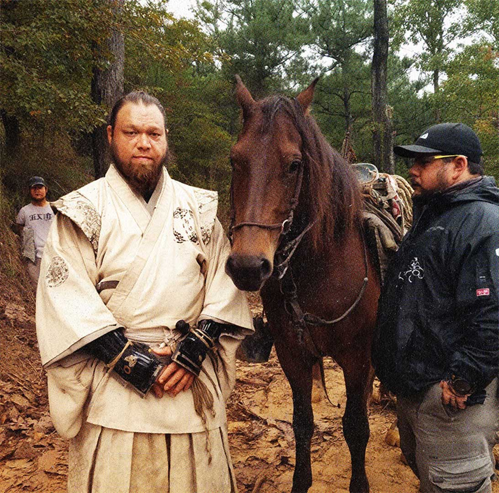
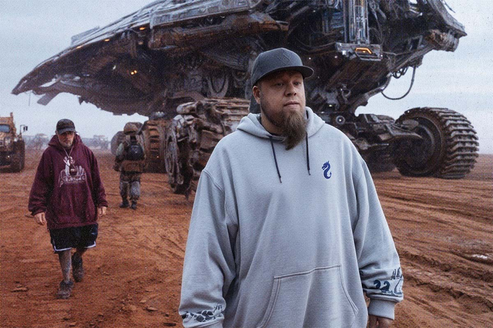
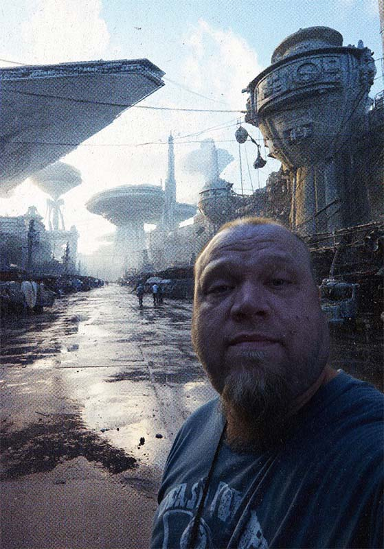
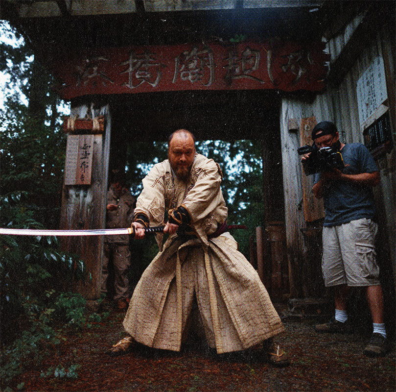
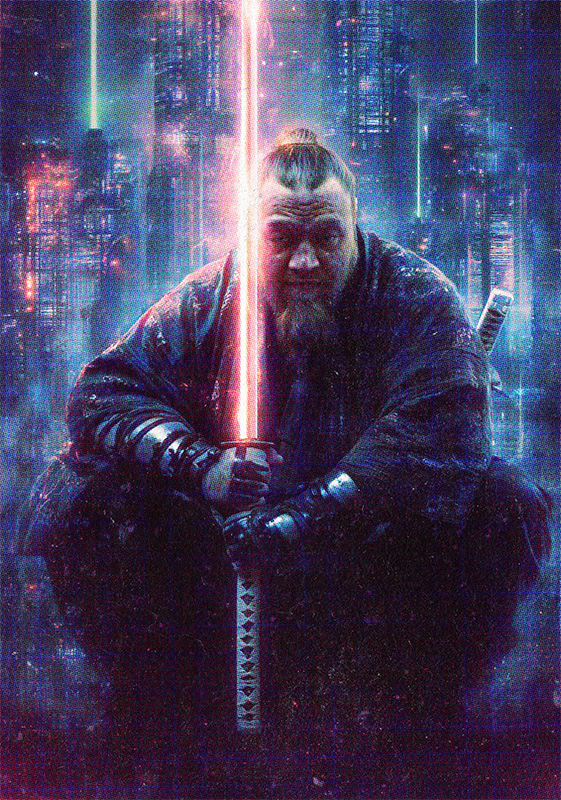
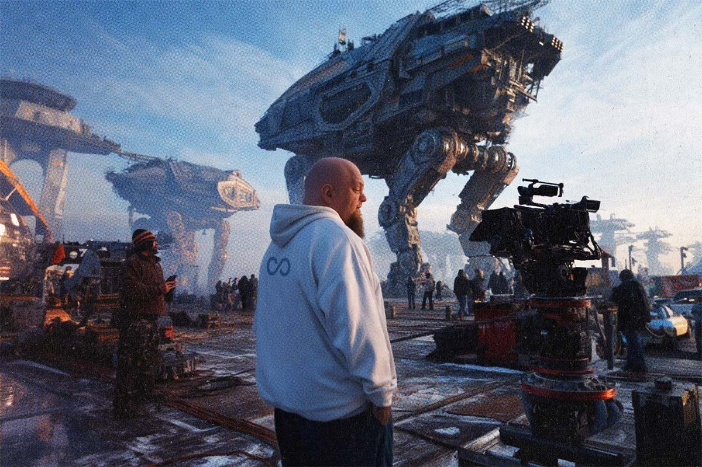
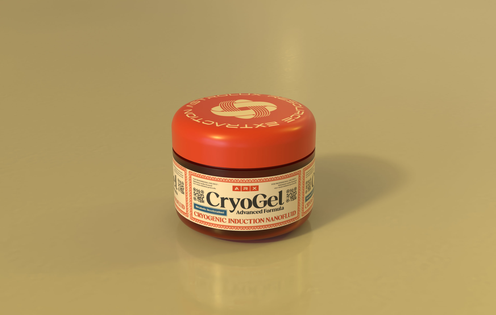
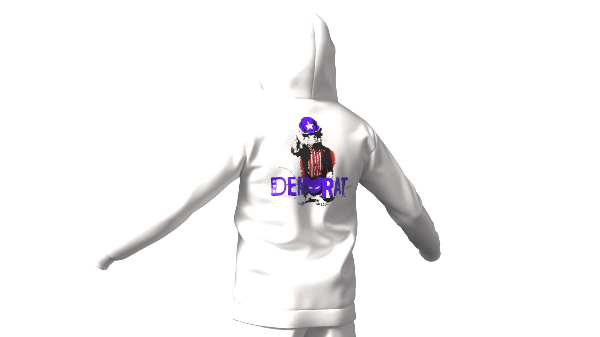
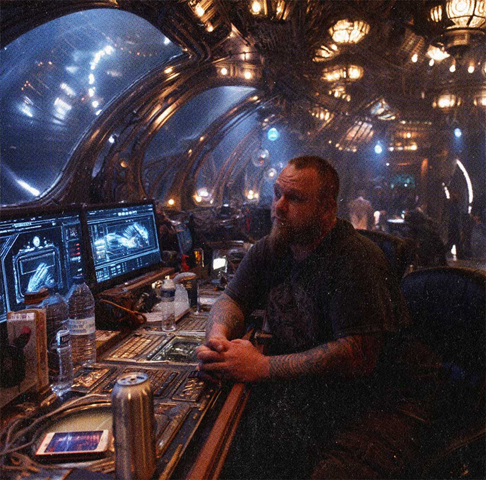
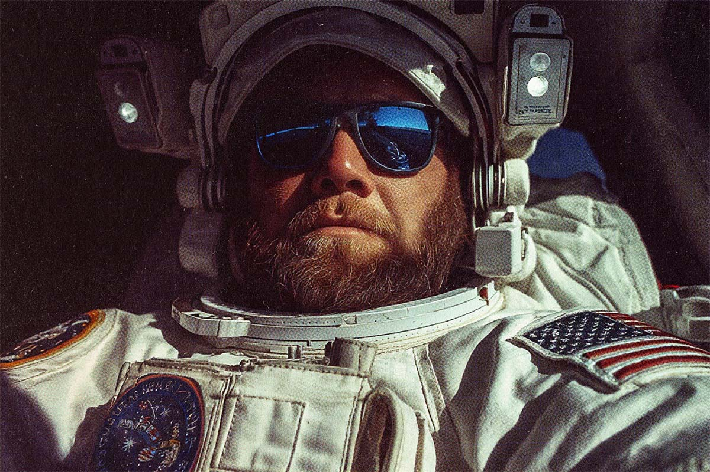

ServiceS
I used to fake-fight ninjas on camera. Now I real-fight scammers onchain.


Onboarding
& Education
Helping people step into the onchain space with clarity, confidence, and independence.
Onchain Safety
This is your first line of defense in the digital wild. Leo Black teaches you how to spot threats before they spot you, dodge dangerous clicks, and keep your accounts secure. Survival here is not about fear; it is about knowing the terrain and moving smart.
Wallet Management
Your wallet is your backpack in the jungle and packing it wrong can be a costly mistake. Leo shows you how to organize, separate, and protect your assets so you are never caught off guard. From day-to-day accounts to long-term vaults, you will learn to handle it all with skill.
Scam Prevention
Scammers are the pickpockets and con artists of the new internet and they are clever. Leo trains you to spot the red flags, test the story, and never take the bait. Once you understand the tricks, you will see the scams coming before they even see you.
Decentralization
Decentralization is like building a village without a single mayor so no one person holds all the power. Leo helps you understand how this structure works and why it matters for freedom online. The more you know, the better you can choose where and how to participate.
Privacy & Anonymity
Your identity is your most valuable asset and the first thing someone will try to take. Leo shows you how to mask your digital footprint, protect your data, and blend into the crowd when necessary. Privacy here is not paranoia; it is preparation.
DAO Participation
DAOs are digital councils where the community makes the calls. Leo guides you through joining, voting, and making your voice count. It is not just about showing up; it is about showing up with knowledge and impact.


Strategy
& Advisory
Equipping you with the insights and plans to thrive in competitive onchain environments.
Digital Strategy
Digital strategy is the map before the mission. Leo Black builds clear, actionable plans that align tools, timing, and tactics to achieve measurable results. Every move is designed to give you the advantage in an environment that changes fast.
Market Research
Market research is how you read the terrain before you take a step. Leo gathers and interprets data to uncover real opportunities while avoiding dead ends. This is not guesswork; it is calculated intelligence for better decision making.
Data Analytics
Data analytics is the process of turning raw numbers into useful insight. Leo breaks down complex datasets into patterns, trends, and predictions you can act on. With the right analysis, you make decisions based on facts, not feelings.
Contract Audits
Contract audits are your security inspection before launch. Leo examines the code line by line to find flaws, exploits, and hidden risks. A clean audit means fewer surprises and stronger trust in the system.
Tokenomics
Tokenomics is the financial engine that drives a project forward. Leo designs sustainable models that balance supply, demand, and utility to keep systems healthy over time. Good tokenomics protects both the mission and the community.
Incentive Structure
An incentive structure is how you motivate the right actions. Leo builds reward systems that encourage participation, loyalty, and growth while avoiding exploits. The right incentives create momentum that keeps a project alive and thriving.


Design
& Develop
Building high-performance apps that merge technical precision with intuitive user experience.
Whiteboard
The whiteboard is where ideas first take shape. Leo Black uses it to map out concepts, workflows, and solutions before a single line of code is written. A strong plan at this stage saves time and prevents costly mistakes later.
Interactive Prototypes
Prototypes are the first working models of an idea. Leo builds them to test features, gather feedback, and refine functionality before full development. This is where vision starts to become reality.
Front End
The front end is the part of a system users see and interact with. Leo designs and builds clean, intuitive interfaces that make complex tools easy to use. A well-built front end keeps people engaged and confident in the product.
Back End
The back end is the engine room that keeps everything running. Leo structures it for speed, stability, and scalability so the system performs under pressure. The right back end makes the front end seamless.
Smart Contracts
Smart contracts are self-executing programs that run exactly as coded. Leo writes and reviews them for accuracy, security, and efficiency. A strong smart contract is the backbone of trust in any onchain system.
Performance
Performance is how well a system holds up under real-world conditions. Leo optimizes code, servers, and architecture to ensure speed and reliability at scale. High performance keeps users active and projects growing.
One
Real
World
Assets
Real world assets are physical investments that gain new power when connected to the digital space.

The Synthetic Frontier
Artificial Reality is a high-stakes playground where the line between the physical and digital dissolves into pure speculation. An experiment in simulated value, gamified economics, and surreal ownership.

Uncle "Scam"
Featuring the “Uncle Scam” rat illustration: a sharp-dressed, finger-pointing rodent in the classic recruitment pose. This piece blends political satire with streetwear edge. Soft, heavyweight cotton makes it comfortable enough for the protest line, the trading desk, or anywhere you want to make a statement without saying a word.
Field Notes for the Digital Sleuth
A sleek, matte-black hardcover featuring the Tracer logo embossed on the front, built for crime junkies, data hounds, and armchair detectives. Inside, you’ll find lined pages, evidence logs, and encrypted QR codes that unlock case files tied to real world assets.
Two
Process
Every mission starts with a plan so nothing gets lost in translation. This is how Leo gets it done.

01
See the Map Before Taking the First Step
Every mission begins with intelligence gathering and situational awareness. Leo conducts in-depth research to uncover the true scope of your goals, challenges, and opportunities; often revealing critical factors that may not be visible at first glance.
This stage is about asking the right questions, identifying the hidden variables, and laying the groundwork for a plan that can survive real-world conditions.
This stage is about asking the right questions, identifying the hidden variables, and laying the groundwork for a plan that can survive real-world conditions.
02
Measure Twice and Cut Once
Once the terrain is mapped, the route is drawn with precision. Leo develops a detailed, actionable blueprint that aligns tools, timing, and tactics into a cohesive strategy.
Every decision is backed by data, industry insight, and practical execution planning. The result is a strategy that is engineered to deliver measurable outcomes and withstand market volatility.
Every decision is backed by data, industry insight, and practical execution planning. The result is a strategy that is engineered to deliver measurable outcomes and withstand market volatility.

03
Turning Vision into a Live Operation
This is where concepts evolve into operational systems.
Leo oversees the design and development of front-end interfaces, back-end infrastructure, and integrated features, ensuring each component is both functional and secure.
Deployment is executed with care, monitoring for stability, speed, and user experience from the moment it goes live.
Leo oversees the design and development of front-end interfaces, back-end infrastructure, and integrated features, ensuring each component is both functional and secure.
Deployment is executed with care, monitoring for stability, speed, and user experience from the moment it goes live.

04
Refine, Adapt, and Stay Moving
After deployment, the mission enters an ongoing optimization phase. Leo tracks performance metrics, gathers user feedback, and identifies both strengths and areas for improvement.
This stage is about agility, making adjustments quickly, iterating for better results, and adapting to shifts in technology or audience behavior.
The process is cyclical, ensuring systems remain sharp, relevant, and resilient over time.
This stage is about agility, making adjustments quickly, iterating for better results, and adapting to shifts in technology or audience behavior.
The process is cyclical, ensuring systems remain sharp, relevant, and resilient over time.